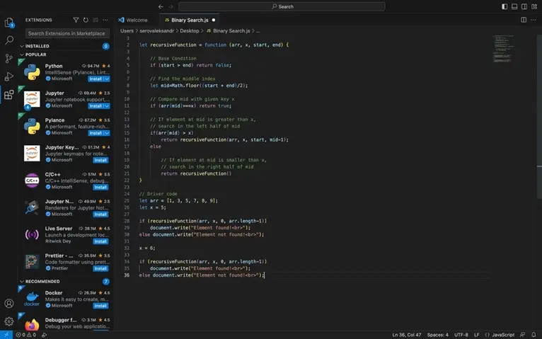
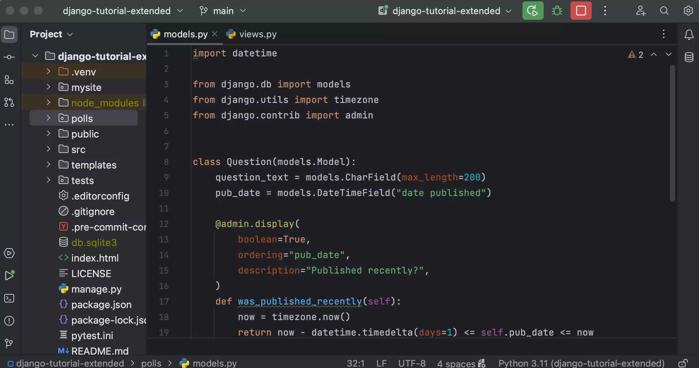
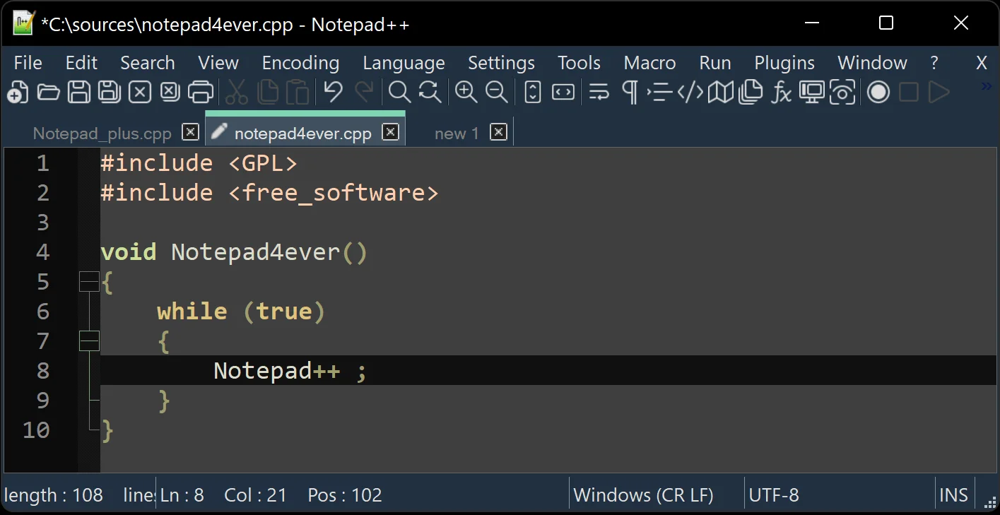
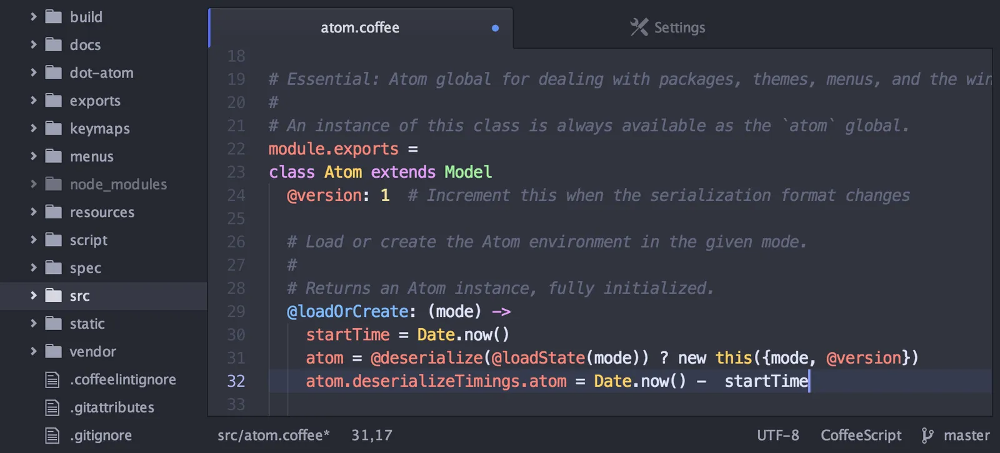
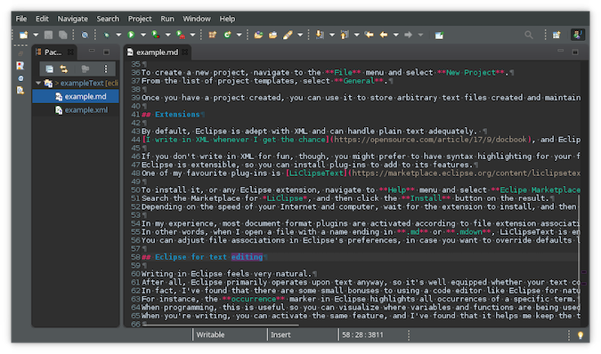

Топ 5 редакторов кода
-
Visual Studio Code (VS Code)

Лёгкий и быстрый редактор, пользуется огромной популярностью среди разработчиков. В него встроена поддержка разных языков программирования, множество плагинов для настройки и расширения функциональности. Отличная интеграция с системами контроля версий, включая Git.
Минусы: неполноценная IDE, нет встроенных интерпретаторов и компиляторов для запуска программ.
Языки программирования: почти все.
Платформы: Windows, macOS, Linux.
-
PyCharm Community Edition

IDE для Python с простым и интуитивным интерфейсом для начинающих. В комьюнити-версии можно учить Python и писать код для небольших проектов.
Минусы: не поддерживает JavaScript, CSS и другие веб-технологии и интеграцию с базами данных (как в профессиональном платном издании PyCharm).
Языки программирования: только Python.
Платформы: Windows, macOS, Linux.
-
Notepad++

Компактный и быстрый текстовый редактор, отлично подходит для редактирования кода. Не тормозит и запускается на любом компьютере.
Главные фишки: подсветка синтаксиса для большинства языков программирования, простой и интуитивный интерфейс и поддержка плагинов для расширения функциональности.
Минусы: ограниченные возможности по сравнению с полноценными IDE — нет компилятора и встроенного файлового менеджера.
Языки программирования: почти все.
Платформы: Windows.
-
Atom

Гибкий и настраиваемый текстовый редактор, созданный GitHub (хотя в 2022-м GitHub сообщил, что отказался от дальнейшей поддержки и развития проекта). Atom до сих пор остается популярным, его хвалят за визуальную ориентированность и поддержку Git.
Минусы: разработчики отмечают, что Atom работает медленнее, чем Notepad++.
Языки программирования: почти все.
Платформы: Windows, macOS, Linux.
-
Eclipse

Гибкая и мощная платформа для разработки. Хорошая интеграция с множеством языков программирования, чаще ценится в Java-комьюнити. Пошаговая сборка кода, удобные рабочие области, набор тем — вот за что её так любят.
Минусы: достаточно запутанный интерфейс, в котором придётся разбираться.
Языки программирования: Java, C и C++, PHP, Perl, Python, Cobol и другие.
Платформы: Windows, macOS, Linux.